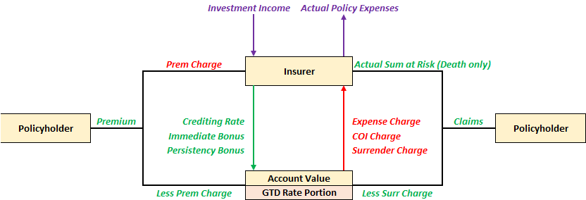
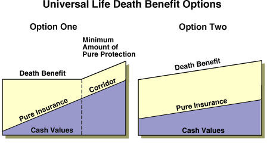

Overview¶
Universal Life Insurance is a form of bundled insurance that has a insurance and investment component:
- Insurance - Policy has a sum assured
- Investment - Premiums are accumulated in an account which grows with interest
- The Cost of Insurance (COI) and any necessary expense loadings are deducted from the above account. The account balance is the Cash Value of the policy
Since premiums are not directly used to pay for the insurance, the policyholder is not required to pay future premiums to keep the policy in-force. The policy will automatically lapse if the account value has insufficient funds to cover the policy charges (ie account value is depleted). Policyholders can voluntarily pay additional premiums in any amounts at any time, providing premium flexibility.
The policy also allows for the sum assured to be adjusted post-inception (subject to any required underwriting). This allows policyholders to effectively customize their policy to meet their specific needs, which is why it is known as Universal life.
Note
During pricing & valuation, UL policies follow a premium persistency assumption to reflect the variability in premium payment. This is similar to the premium holiday assumption for ILPs.
Account Value¶
The account value of the policy is notional, the insurer does not actually have a seperate sub-account for each policy. It is typically known as the General Account, as the funds are pooled within the insurer's own general account.
The various components that flows in and out of the account value will be discussed in the subsequent sub-sections.

Planned Premiums¶
Given that there are no strict premium obligations, policyholders might underfund their policy, which may result in lapsing much earlier than expected. Thus, insurers typically recommend a premium amount that SHOULD be paid each year, known as the Planned Premium:
- Single Premium - Typically required to pay proportion of planned premium to incept
- Regular Premium - Typically required to pay the full planned premium to incept
The planned premium is typically calculated such that, on a best estimate basis, if all planned premiums are paid, then a specific objective is achieved (EG. Policy endows at age 100, AV = SA). Thus, it is also known as the Solved Premium.
-
Positive Experience - Account values grows more than expected to cover costs each period. Policyholders no need to pay the premium and the policy will continue to grow ("vanishing premiums")
-
Negative Experience - Account value grows less than expected. Even if all the planned premiums are paid, the AV will be insufficient to reach the intended goal; policy will lapse earlier than expected. Insurers will typically send recommendations to the policy to fund the policy.s
Warning
UL is often marketed as a “whole life” product. However, this is misleading because there is no guarantee that the policy will remain in-force for life, even if all planned premiums are paid, due to potentially lower crediting rates.
This is contrary to other products where premium payment guarantees the coverage. Policyholders might not be able to appreciate the difference in product design and thus feel "cheated" by the insurer.
Policyholders can also pay MORE than the total planned premium amount, typically known as Overfunding the policy. This will allow the account value to grow faster, allowing the policy to better sustain itself in the long-run. However, insurers typically set an overfunding limit:
-
Insurer might be worse off - Higher account values means lower COI but higher expense charges; net effect dependent on pricing and mix
-
Legal Reasons - Certain jurisdictions might no longer consider it as an insurance contract and hence lose out on tax or other benefits
Distributors might be incentivized to encourage policyholders to overfund the policy in order to earn a higher commission. Thus, insurers typically set a maximum level (Target Premium), such that any premiums above this level (Excess Premium) earns commissions at a reduced rate. The target premium is typically set close to the planned premium amount.
$$ \begin{aligned} \text{Excess Premium} &= \text{Planned Premium} - \text{Target Premium} \
\text{Total Commission}
&= \text{Target Premium} \cdot \text{Comm Rate} + \text{Excess Premium} \cdot \text{Reduced Comm Rate}
\end{aligned}
$$
Warning
In the past, planned premiums used to use the term "Target Premium", which may cause some confusion.
Crediting Rate¶
The interest credited to the account is known as the Crediting Rate (CR). Most insurers provide a non-negative Minimum Guaranteed Rate (>0), which ensures that the account value cannot go down.
Tip
It is possible that the crediting interest exceeds the amount of charges in a given period, resulting in a self-sustaining policy. However, this is usually short-lived as the cost of insurance increase exponentially.
Similar to participating products, the CR is determined based on the insurer's own investment experience over the period, taking into account other considerations as well (EG. Smoothing, Competitiveness etc).
The insurer effectively earns the difference between the actual investment return and the credited rate, known as the Investment Spread.
Warning
When returns are low, the investment spread will be compressed or even turn negative as the insurer still has to meet the minimum guaranteed rate.
Cost of Insurance¶
At any given time, the policy will either pay out the:
- Death Benefit - Equal to the sum assured
- Surrender Benefit - Equal to the account value
The excess of the death benefit over the account value is known as the Sum at Risk (SAR). It represents the additional amount that the insurer will have to pay in the event of death, which is a more accurate reflection of the coverage provided by the insurer. The COI rates will be based on the SAR at the time of charge:
Note
The SAR is also referred to as:
- Net Amount at Risk (NAAR)
- Additional Death Benefit (ADB) - Not to be confused with Accidental Death Benefit
The COI rates are based on the current age of the life insured (attained or S-U scale):
- Guaranteed COI rates
- Adjustable COI rates
- Adjustable with guaranteed maximum COI rates
Tip
It is useful to think of UL as a YRT with an account value that funds the premiums.
Some product designs do not charge an explicit COI but rather embedded the cost within the investment spread.
Sales Inducements¶
Sales Inducements are product features that enhances the investment yield to the policyholder (US SEC definition), intended to assist in the sales process. There are three main types:
- Immediate Bonuses (Welcome Bonus) - Paid into account value immediately upon inception
- Persistency Bonus (Loyalty Bonus) - Paid into account value at the end of a specified period
- Promotional Crediting Rates - Higher crediting rate for a specified period
Immediate Bonuses are naturally guaranteed since they are given on inception, but are also typically subject to some form of clawback if certain conditions are met. Persistency Bonuses can be guaranteed or non-guaranteed depending on the product design.
If the bonus is non-guaranteed, then the amount of bonus is dependent on the insurer's experience. This may result in a situation where early surrenders subsidize the persistency bonus of those who remain in-force, creating a Tontine, which some jurisdictions disallow.
Note
An issue with the immediate bonus is that it increases the account value from day 1, which decreases the sum at risk and hence COI charges. Depending on the product design, this could have a decrease in net charges, which leaves the insurer worse off in the long-run (downstream impact).
Thus, another popular method is to provide a Premium Discount instead, which achieves similar effect but retains the account value.
Promotional crediting rates are typically offered in the form of guaranteed crediting rates for a fixed duration. This is also sometimes referred to as a Locked In Rate.
Operationally, the insurer must track which premiums are entitled to earn the guaranteed rate. Only premiums paid at the time of the promotion should earn the guaranteed rates; subsequent premiums will earn the regular rates.
- Guaranteed Account: Earns guaranteed rates
- Non-guaranteed account: Earns non-guaranteed rates
- After the guaranteed period is over, the funds are re-allocated back to the non-guaranteed account
Some insurers also offer the option for the policyholder to choose their desired guaranteed rate, typically differing by the guarantee period. Longer better?
Death Benefit¶
There are typically two kinds of Universal Life plans:
| Option A/1 | Option B/2 |
|---|---|
| Level death benefit | Increasing death benefit |
| Sum Assured Only | Sum Assured + Cash Value |
| Decreasing sum at risk | Constant sum at risk |
| Required corridoor | No need corridoor |

The SAR represents the true amount of insurance coverage provided. To be considered an insurance contract, a minimum level of coverage is required - prescribed through a minimum ratio between the death benefit and the account value, known as the Corridoor Factor. The SAR required to minimally maintain this ratio is known as the Corridoor. If the policy falls below the minimum ratio, the sum assured of the policy will be increased to maintain the corridoor.
Note
The death benefit option of the policy can also be changed post-inception.
Surrender Benefits¶
The surrender benefit of the policy is equal to the account value, which can be fully or partially withdrawn at any time.
Due to the high costs associated with setting up a policy, insurers need several years to recover the amount from the policy charges. Thus, insurers are left at a loss if a policyholder surrenders early on in the policy. There are two common product designs to deal with this:
-
Back-End Load - Apply a surrender charge (% of AV) that is deducted from the surrender value before being paid out; penalizes only exiting policyholders
-
Front-End Load - Apply a premium charge (% of Prem) that is deducted from the premium before being invested into the account value; penalizes all policyholders
-
Both charges typically start high and gradually reduce to 0 over the first few policy years
Premium charges allow the company to more quickly recover the costs on inception of the policy, thus are less concerned about early surrenders. On the other hand, surrender charges discourage early surrenders, encouraging the policy to remain in-force to allow the insurer to recover costs over time.
Premium charges directly reduce the amount invested, making it less efficient for compounding (increasing the breakeven period), making it less popular among consumers these days who are generally much more financially literate. Surrender charges are thus much more common for modern product designs. It is also possible to have a combination of both loads (though each would be applied to a much smaller degree).
Note
Surrender charges for regular premium plans can be as high as 100% in the first few years to fully discourage surrenders.
Policy Loans¶
Similar to traditional products, UL policies allow the policyholder to take a loan against the cash value (account value) of the policy. Any outstanding loan balance at the time of death of surrender will be offset from the amount payable.
- Loaned Portion - Earns minimum or lower crediting rate
- Remaining Portion - Earns regular crediting rate
No Lapse Guarantees¶
Universal Life was launched in the 1980s when interest rates, and thus projecting credited rates were high. As such, premiums were lower compared to otherwise equivalent WL policy, with the added benefit of flexibility. This is why UL is also referred to as interest-sensitive life insurance.
However, when interest rates became low down in the 1990s onwards, many of those policies issued in the 1980s ended up being severely underfunded, resulting in many account values to deteriorate 0, causing the policy to lapse. Naturally, this resulted in the outrage of many policyholders, with several insurers engaged in major lawsuits.
This prompted a major change in product design, resulting in the creation of No Lapse Guarantees (NLG). If the conditions are met, it will allow polices to remain in-force even if the account value depletes to 0, delinking the policy status from the account value. They are sometimes referred to as Secondary Guarantees and can range from a specified number of years or for the entire duration of the policy.
-
Minimum No-Lapse Premium (MNLP) - As long as the the cumulative premiums paid by the policyholder is greater than the MNLP, the policy will remain in-force. It is designed such that the resulting policy is expected to generate little to no cash value, focusing on protection without the ability to withdraw or loan. This type of UL design effectively recreates a long-duration term policy.
-
Shadow Accounts - Parallel account that is projected using different (more conservative) parameters. As long as this shadow account remains positive, the policy will remain in-force. This allows flexibility in the NLG design as the parameters can be easily tuned for a specific NLG period.
Note
A variant of the MNLP is known as the Fixed Premium UL where the policyholder requires premium payments (non-flexible). The amout is typically set at the NLG amount. It is essentially a WL policy with crediting rate, sometimes referred to as Interest Sensitive Whole Life.
Note
Shadow Account designs have become increasingly more complex with the account being split into different sub-accounts which earns different rates. The allocation could be based on timing, specified thresholds or other factors.
Note
Tend to be laspe supported?
Both methods are testing for premium adequacy. As long as the approach proves that the policyholder had sufficiently funded the policy, the policy will be kept inforce. This seperation from the account value solves the fundamental problem of actual market conditions adversely affecting the policy.
- MNLP Approach - Simple; checks if premiums paid exceeds a prescribed level
- Shadow Account Approach - Complex; checks if premiums paid would keep the policy in-force in a controlled environment (stripping out economic effects)
NLG designs (especially shadow accounts) can go very deep and can technically be considered a whole class of UL product on its own; the above is the essence of the feature. It can also be administered in the form of an attachable rider.
Warning
Regulatory implications TO UPDATE THIS SECTION SHITSHOW
Premium Financing¶
UL plans are very popular among the high net worth market given its flexibility, allowing them to be catered to the complex and specific needs of this segment that traditional mass market policies cannot. For instance, it is not uncommon to have UL policies with coverages in multiples of 10 million while traditional WL or term might not even have such options available.
The unique aspect about the HNW market is that these individuals tend to be asset rich:
- They require high levels of coverage to fully insure their wealth
- They might not have the cash readily available to purchase such high coverages
Thus, Premium Financing is a method of purchasing such large insurance policies:
- The bank offers a loan to cover a large proportion of the premium
- The purchased policy is assigned to the bank as collateral for the loan
- The policyholders existing assets with the bank may also be taken as collateral
This allows HNW individuals to obtain the necessary coverage without needing to liquidate any of their existing assets. The financing bank is typically more than happy to provide such services as:
- Any existing assets with the bank are preserved (rather than liquidated)
- Bank issued a new lombard loan
- Relationship building opportunity with the client & their next generation
Another key selling point of this arrangement is that UL policies have guaranteed crediting rates from the insurer. This means that the policy may be able to grow faster than the loan balance, allowing them to profit the spread after loan redemption. This is especially true in times of low interest rates when the guarantees are biting and the cost of borrowing is low (EG. 2010s).
Note
Premium financing is most common for the Single Premium UL policies. It is also seen in the SP Par space for similar reasons.
There are several risks involving with premium financing:
-
If the performance of the policy is below expectations, the policyholder might have to put up additional collateral to sustain the arrangement (which might not be readily available)
-
If the policy performance is too poor or if the bank would like to exit the client, they can force surrender the policy to redeem the loan. If sufficient early in the policies lifetime, this will require the policyholder to pay off the remaining loan balance
-
If the policyholder dies early, the proceeds will first be used to pay off the loan balance, the remaining amount (if any at all) is left to the intended beneficiaries.